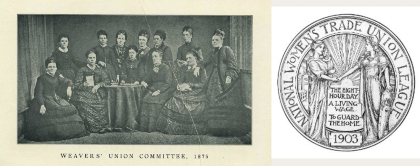

Resistance and Reform
During the Industrial Revolution, working-class women endured harsh conditions in factories and textile mills, but also grew to become active advocates of resistance and reform. They organized and staged protests that laid the groundwork for future labor reforms and feminist movements.
One of the most iconic examples of women's labor resistance occurred at Lowell Mills in Massachusetts, where young women were recruited from rural villages in the 1830s and 1840s and strictly supervised to work 12 to 14 hours a day. Later, women workers in these mills began to resist wage cuts and long hours by organizing strikes and publishing letters of protest. These were the first recorded strikes by female industrial workers in the U.S.[1]
The movement was led by Sarah Bagley, who helped found Lowell Female Labor Reform in 1844, which called for a ten-hour workday and was one of the first organizations to lobby state legislatures for labor reform. They held meetings, wrote petitions, and even testified before the state legislature to make their wishes and protests known. [2]
While these early strikes did not always lead to immediate improvements, they marked a turning point in the way that working-class women began to see themselves as political participants worthy of being heard. They challenged the notion that women should remain silent in public life and fought for a place in labor politics.
Moreover, across the Atlantic, British women were involved in the resistance movement. Although their roles were often overshadowed by male trade unionists, women participated in strikes, supported labor actions, and ultimately helped build gender-inclusive organizations.
For example, Emma Paterson founded the Women's Protective and Provident League in 1874, which supported women workers and helped them form their own unions.[3] Paterson argued that without union representation, working-class women would always lack a voice in economic decision-making.
These grassroots efforts by women exacerbated public concerns about labor conditions and prompted government action. In England, a series of Factory Acts were passed beginning in 1833, which gradually improved labor conditions for women and children by restricting hours of work and enforcing basic safety standards.[4] These statutes were not entirely the responsibility of women. While these legal reforms were not exclusively led by women, they were in fact heavily influenced by the behavior and language of women workers. They testified, wrote, and protested for change.
In addition to these landmark efforts, working-class women in the industrial world led or participated in many other acts of resistance. For example, the Matchgirls Strike of 1888 prompted young women in London to walk out of Boo Bryant & May's match factory to protest dangerous working conditions and unfair pay. Their success inspired broader labor reforms. Meanwhile, groups like the Women's Co-operative Guild, founded in 1883, fought for maternity benefits, child welfare and workplace protection. They fought not only for better labor standards, but also for women's dignity in the workplace and at home.
Return to Main PageReferences
- Thomas Dublin, Women at Work. The Transformation of Work and Community in Lowell, Massachusetts, 1826–1860 (New York: Columbia University Press, 1979), 14–36.
- Anne M. Boylan, Women’s Rights in the United States: A History in Documents (New York: Oxford University Press, 2016), 113.
- Steven Parfitt, “Emma Paterson, Trade Unionist and Feminist, in Her Own Words,” October 17, 2024, 19.
- Von Plener, The English Factory Legislation (BoD – Books on Demand, 2023), 33–36.